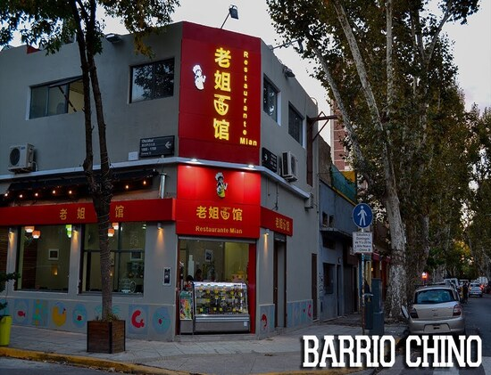

Capital Autónoma de Buenos Aires
Restaurante Mian

Ubicación: Arribeños 2302, C1429 CABA
Ubicación: Arribeños 2302, C1429 CABA
Calificación: ★★★★★
El restaurante ofrece una amplia variedad de platos tradicionales chinos, preparados con ingredientes frescos y de alta calidad. El ambiente del restaurante es cálido y acogedor, con una decoración inspirada en la cultura china. El servicio es atento y amable, y el personal está dispuesto a ayudar a los clientes a elegir los platos que mejor se adapten a sus gustos. La comida de Mian es simplemente deliciosa. Los platos están bien elaborados y tienen un sabor auténtico. Probé el chow mein, el pollo kung pao y el pato a la pekinesa, y todos estaban deliciosos.